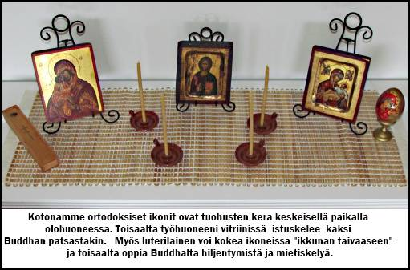

USKONTOOPPIMATERIAALIA NETISSÄ VUODESTA 1999 LÄHTIENPSYKOLOGIAN PIKALINKIT PSYKAN VIDEOABIKURSSIT: PSYKOLOGIAN MAAILMA -VIDEOKERTAUSKURSSI ABEILLE (vlogi) - uudet OPSit PS7 ABI KERTAUSKURSSI (opetustilanne) - VANHA OPS (OPS 2016 ja 2021): PS1 Toimiva ja oppiva ihminen PS2 Kehittyvä ihminen PS3 Tietoa käsittelevä ihminen PS4 Tunteet ja mielenterveys PS5 Yksilöllinen ja yhteisöllinen ihminen Uskonto: UE1 UE2 UE3 UE4 UE5 UE6 Filosofia: FI1 FI2 FI3 FI4 FI5 Ortodoksinen kirkko levisi Suomeen Venäjältä Novgorodista käsin. Vanhan kronikan (aikakirjan) mukaan kreikkalainen munkki Sergei ja karjalainen käännynnäinen Herman perustivat Valamon luostarin, josta munkit sitten sotien myötä joutuivat lähtemään evakkoon ja tulivat lopulta tänne meille Heinävedelle ja perustivat sinne suomalaisille tutun Uuden Valamon luostarin. SUOMEN USKONNOLLINEN KENTTÄ (linkit sivustoni teksteihin): SUURIMPIA: Suomen evankelis-luterilainen kirkko Suomen ortodoksinen kirkko Suomen helluntaiherätys Islam Jehovan todistajat Suomen Vapaakirkko Katolinen kirkko Suomessa Suomen Adventtikirkko Mormonit MUITA KRISTILLISIÄ OSIN RYHMITELTYNÄ: Pelastusarmeija Anglikaanit Baptismi Metodismi Evankelikaalisia Karismaattisia Muita luterilaisia ja kristillisiä MUITA USKONNOLLISIA YHTEISÖJÄ OSIN RYHMITELTYNÄ: Krist.vaikutteisia Buddhalaisuus Juutalaisuus Hindulaisperäisiä Synkretistisiä Muita |
Suomen Ortodoksinen kirkko
Suomen ortodoksinen kirkko
Valamon luostari Lintulan luostari Ekumeeninen patriarkaatti A. Ortodoksisuuden historiaa Suomessa
TAUSTATIETOA KARJALASTA 
- V. 1187 Novgorodin väki teki hävitysretken Ruotsiin, Sigstunaan.- 1000-1200 kristinusko levisi Karjalaan Novgorodista käsin sekä kaupallisen kanssakäymisen että lähetystyön ansiosta. - hautalöydöissä vielä 1200-luvulla täysin pakanallisia hautoja, joissa aseita ja työkaluja vainajien mukana; tapa vähenee 1100- ja 1200-luvulla, jolloin vainajien mukaan aletaan liittää kristillisiä esineitä (Käkisalmen Suotniemestä hopeaketju, jonka kannattamaan renkaaseen oli pujotettu muutama ortodoksinen hopearisti;Kekomäestä rukoilevaa Neitsyt Mariaa esittävä ikoni; Hiitolasta ristiaiheinen pyöreä hopeariipus; Sakkolan Patjan kalmistossa haudatulla naisella oli ainoana hautaesineenä ortodoksinen Kristus-ikoni). - sanat risti, pappi, raamattu ja kummi ovat tulleet idästä. LÄHETYSTYÖTÄ KARJALAAN: - venäläinen kronikka kertoo Jaroslav Vsevolodinpojan tehneen 1226 karjalaisten avustamana hyökkäyksen Hämeeseen ja 1227 hän toimitti Karjalaan lähetyssaarnaajia. Hän "lähetti kastamaan suurimman osan Karjalaa, lähes kaikki ihmiset". - Roomalaiskatolinen kirkko v. 1240 Tuomas-piispan aikana hyökkäys Nevalle Novgorodia vastaan (paavin lupa hyökätä ortodokseja vastaan). Aleksanteri (N:n ruhtinas) rukoili Jumalalta apua; eräs inkeriläinen heimopäällikkö (Pelguin = Pelkonen) oli nähnyt näyn, joka ennusti Aleksanterille voittoa. A. voitti selvästi ja pelasti ortodoksisen uskon Karjalassa. Paavi yritti mm. neuvotteluteitse saada v. 1258 Aleksanterin katolisen kirkon puolelle. Aleksanteri ei suostunut, siksi häntä ortodoksit kunnioittavat pyhänä. A. sai voittonsa johdosta nimen Nevski. - 1323 Pähkinäsaaren rauha jakoi Suomen Ruotsille (katolisille) ja Novgorodille (ortodokseille). - Novgorod Moskovan hallintaan. Tsaarien sodat ruotsalaisia vastaan murtavat ortodoksista kirkkoa. Kaikkein tuhoisin sota ns. 25-vuotinen Iivana Julman aloittama (1570-95). Ruotsi voitti ja sai Karjalanhaltuunsa hävittäen kirkkoja ja luostareita, vaikka Ruotsin kuningas Juhana III oli tämän kieltänyt. Ruotsalaiset hävittivät Konevitsan 1577 ja Valamosta munkkien oli lähdettävä pakoon murhaa ja hävitystä kahdesti 1578 ja 1581 (suurin osa rakennuksista paloi ja 80 ihmistä kuoli). Petsamon luostari hävitettiin 1589 karjalaisten ja pohjalaisten taistelussa. - v. 1582 tsaari määräsi Karjalan kylien polttamisen ja väen viemisen Venäjälle. - Täyssinän rauhasta 1595 vuoteen 1609 rauhan aikaa. Sitten venäläisten valtataistelu, johon Ruotsi ja Puola osallistuivat - Romanov-suku johtoon. Ruotsalaiset hävittivät Valamon luostarin v. 1611. Stolbovan rauhassa v. 1617 Karjala tulee Ruotsi-Suomelle, vallatulla alueella säilyi uskonnonvapaus (ortodoksisuus). RUOTSIN VALLAN AIKA (1617-1721) - v. 1685 Karjalan ja Laatokan piispan viran perustaminen Ruotsin suostumuksella. Puhdasoppinen luterilainen kirkko aloitti Stolbovan rauhan jälkeen ortodoksien käännyttämisen. V. 1618 Viipuriin luterilaisen piispan virka. v. 1681-89 Inkerimaan valvojana (superindententtinä) toimi Juhana Gezelius Nuorempi, joka sai aikaan sen, etteivät ortodoksipapit saivat toimia vain venäjän kielisten asukkaiden keskuudessa. Gezelius nuoremman näkemys oli, että ortodoksinen usko on "melkein pimeyden ja perkeleen, turkin ja pakanain uskoon verrattava". Luterilainen käännytystyö onnistui huonosti. KARJALA KAHTIA JAETTUNA (1721-1809) - Uudenkaupungin rauhassa v. 1721 Ruotsi luovutti Venäjälle osan Karjalaa (Käkisalmen läänin, Inkerin, Liivinmaan ja Viron). Venäjään liitettyä Kaakkois-Suomea alettiin kutsua "Vanhaksi Suomeksi". - Valamon ja Konevitsan luostarit olivat lakkautettuina Ruotsin vallan aikana n. sata vuotta. Valamon (1717) ja Konevitsan (1718) uudelleenrakennustyöt aloitettiin. V. 1754 tulipalo tuhosi Valamon luostarin lähes kokonaan. SUOMEN AUTONOMIAN AIKA (1809-1917) - Porvoon valtiopäivillä 1809 Venäjän tsaari Aleksanteri I antaa Suomelle autonomian (Ruotsin valtakausi päättyy). Vanha Suomi liitetään muun Suomen yhteyteen 1812. - v. 1865 Pyhä Synodi (Pietarin, Moskovan ja Kiovan metropoliitat sekä keisarin nimeämät jäsenet (11)) määräsi, että Suomen ortodoksisissa seurakunnissa jumalanpalvelus oli toimitettava kansankielellä. - Uusia seurakuntia lisää, jopa esim. Vaasaan, Turkuun, Tampereelle jne. Helsinkiin rakennettiin v. 1826 Pyhän Kolminaisuuden kirkko ja 1868 Uspenskin katedraali. - Valamon kukoistuskausi alkaa igumeni Nasarin, askeettisen munkin, saavuttua Valamoon: vaati ankaraa kilvoitusta; rakennukset puun sijaan tiilistä. - Lintulan naisyhdistys perustettiin v. 1895 ja luostariksi se muutettiin 1906. - 1885 syntyi Pyhäin Sergein ja Hermanin Veljeskunta. - 1897 Aamun Koitto -lehti alkaa ilmestyä. - 1896 Suomen seurakunnista muodostettiin hiippakunta SUOMEN ITSENäISYYDEN AIKA (1917-) - 6.12.1917 Suomi itsenäistyy - venäläistämiskoulujen lakkauttamista alettiin vaatia ortodoksipiireissä. - 26.11.1918 "Asetus Suomen kreikkalaiskatolisesta kirkkokunnasta" ts. perustuslaki. - 1919 ensimmäinen kirkolliskokous. - v. 1921 Venäjän patriarkka Tihon antoi anomuksesta Suomen kirkolle sisäisen itsenäisyyden eli autonomian. Senaattori, valtioneuvos, professori E.N. Setälä keskeinen ortodoksisuuden suosija ja edustaja Suomen senaatissa. - v. 1923 TOMOS-asiakirja, jolla Suomen ortodoksinen kirkkokunta siirtyi Konstantinopolin ekumeenisen patriarkan Meletios IV:n alaisuuteen. - Suomen itsenäistyttyä siirrytään suomenkielisiin jumalanpalveluksiin. - Ajanlaskukiista, jossa pohdittiin käytetäänkö perinteistä ortodoksista juliaanista kalenteria, vai 13 päivää tätä edellä olevaa gregoriaanista kalenteria. v. 1923 päätettiin ottaa käyttöön gregoriaanistakin tarkempi ns. meletiaaninen kalenteri. - 1943 perustettiin Ortodoksisten Nuorten Liitto, lehdeksi Tuohustuli. - 1951 Ortodoksisten Opettajain Liitto SUOMEN ARKKIPIISPAT (1892-) - Suomen arkkipiispoista käytetään nimen edessä arvonimeä "Korkeasti pyhitetty". - Venäjän vallan ajan Suomen ortodoksisen kirkon arkkipiispat: 1) Antonij (1892-98), lisäsi valistusta Karjalassa ja käytti suomen kieltä laajemmassa määrin (saarnat, jumalanpalvelukset suomeksi), kirkkolaulukursseja; kohotti kansan hengellistä tilaa. V. 1898 valittiin Pietarin metropoliitaksi. 2) Nikolaij (1898-1905), venäläisen sortokauden piispa, vastusti suomalaistumista: "Oppikoon ensin puhumaan ja laulamaan venäjäksi, sitten vasta otan heidän tervehdyksensä vastaan ja annan siunaukseni heille". 3) Sergeij (1906-1917), suomenkieliset jp:t lakkautettiin, venäläismielisiä pappeja suosittiin 4) Serafim (1918-19) apulaispiispa Suomen ja Viipurin piispaksi. Vastusti Suomen ortodoksisen kirkon itsenäistymistä Venäjän kirkosta; venäläisyyden puolustaja. (v. 1919 apulaispiispaksi Mikael Kasanskin, Suomen ortodoksinen kirkko ei mainitse tätä henkilöä nykyisessä arkkipiispaluettelossaan). - Konstantinopolin vallan alla toimineet Suomen ortodoksisen kirkon arkkipiispat: 5) Herman Aav (1925-1960), isänmaallisuuden, suomalaisuuden edistäjä, ekumeenisen patriarkan alaisuuteen siirryttäessä monia asioita, venäläisistä tavoista luopuminen. 6) Paavali (Yrjö Olarmi, 1960-1987), karsimaattinen, hengellinen, rukous- ja jumalanpalveluskeskeinen piispa, jolle tärkeää oli Uuden Valamon luostarin kehittyminen. 7) Johannes (Vilho Johannes Rinne, 1987-2001), ekumeeninen, monien järjestöjen tukijapiispa. 8) Leo (Makkonen, 2001-edelleen) Ensivaikutteet Novgorodista Karjalaan n. 1100-1200 -luvulla - kaupankäynnin myötä Ortodoksisuus alkaa vakiintua 1300-luvulla Valamon luostarin myötä - Valamolainen perimätieto mainitsee luostarin perustamisvuodeksi 992, mutta luostaria ei nähtävästi perustettu vielä näin varhain. Nähtävästi Valamo perustettiin (ortodoksien mukaan) 1100-luvun alkupuoliskolla. - Erään novgorodilaisen kronikan mukaan "vanhus Sergei" tuli Valamon saarelle vasta v. 1329. Näin luostarin perustaminen olisi kuulunut Pähkinäsaaren rauhaa seuranneisiin järjestelytoimenpiteisiin. - perustajina SERGEI (kreikkalainen munkki), jota Laatokan rannan (Sortavalan tienoilla) asukkaat kehottivat siirtymään saareen, joka oli nähtävästi uhripaikka. Sergei asettui asumaan saaren kallioluolaan ja alkoi opettaa saaren asukkaita. Kristuksen seuraajien luku kasvoi ja perustettiin pieni luostari. Karjalainen käännynnäinen HERMAN jatkoi pyhittäjä Sergein työtä. Luostari pyhitettiin Vapahtajan kirkastumisen muistolle. Ortodoksinen kirkko kunnioittaa Sergeitä ja Hermania "Karjalan valistajina" (muistojuhla 28.6 ja 11.9). Valamosta lähtivät myös munkit, jotka perustivat luostareita: Arseni (Konevitsa 1393), Aleksanteri (Syväri) ja Savvati (Solovetski). Petsamon luostarin perusti Trifon v. 1533. - nykyisin Uusi Valamo Heinävedellä on tärkeä ortodoksinen keskus Suomessa; Lintulan naisluostari myös Heinävedellä 1500-luvulta lähtien ortodoksit kokivat vastoinkäymisiä Ruotsin ja Venäjän sodissa - ks. edellä kohta: LäHETYSTYöTä KARJALAAN 1800-luvuila ortodoksisuus Suomen venäläistämispolitiikan välineenä - ks. edellä: SUOMEN AUTONOMIAN AIKA - venäläistämistä toteutettiin nimenomaan kenraalikuvernööri Bobrikovin toimesta Karjalaan perustettujen venäjänkielisten "ministerikoulujen" avulla. "Ministerikoulu" nimi johtui siitä, että niitä ylläpidettiin osaksi Venäjän kansanvalistusministeriön avulla. Venäläistämiskouluja oli enimmillään Venäjän vallankumouksen puhjetessa v. 1917 noin 70 kappaletta. Niiden toiminta päättyi Suomen itsenäistyttyä. Venäläistämiskoulut kilpailivat suomalaisten kansakoulujen kanssa. 1923 Suomen ortodoksit Konstantinopolin alaisuuteen - Suomen ortodoksit aluksi Moskovan patriarkaatin alaisia, nykyisin riippumaton kirkko - irti Venäjästä, koska Neuvostohallituksen toimenpiteitä kirkkoa kohtaan ei hyväksytty. - v. 1923 TOMOS-asiakirja, jolla Suomen ortodoksinen kirkkokunta siirtyi Konstantinopolin ekumeenisen patriarkan Meletios IV:n alaisuuteen. Meletios julisti Suomen ortodoksit patriarkan tuomiovallan alaiseksi Suomen ortodoksiseksi arkkipiispakunnaksi. Samalla Meletios IV antoi kirkolle täydellisen sisäisen itsenäisyyden, autonomian. - Ote TOMOS-asiakirjasta: "Meletios, Jumalan armosta Konstantinopolin, Uuden Rooman Arkkipiispa ja Ekumeeninen Patriarkka. - Pyhimmälle Apostoliselle ja Patriarkalliselle Ekumeeniselle Konstantinopolin Valtaistuimelle on kanonisesti uskottu huolenpito Pyhistä Ortodoksisista kirkoista, joilta nykyisten olojen johdosta on riistetty paimenellinen huolenpito. Kun Ortodoksinen kirkko äskenperustetussa Suomen valtakunnassa, sen osaksi tulleiden uusien valtiollisten edellytysten vuoksi ja Venäjällä sattuneiden kirkollisten epäsäännöllisyyksien johdosta eroitettuna Venäjän Pyhimmän Ortodoksisen Kirkon yhteydestä, josta se tähän asti on kanonisesti ollut riippuvainen, tätä nykyä on suojaa vailla ja on, kääntyen sekä kirjeillä että erityisen lähetyskunnan kautta Ekumeenisen Istuimen puoleen, pyytänyt sen henkistä johtoa ja huolenpitoa turvallisen ja kanonisen toiminnan ja asioittensa hoidon aikaansaamiseksi, niin me luonamme olevien pyhitetyimpien ja kunnianarvoisimpien Metropoliittain kanssa rakkaudella olemme myöntyneet tähän pyyntöön ja nähneet hyväksi synodisesti asian harkittuamme ottaa asianmukaisesti huolehtiaksemme Suomen Ortodoksisesta Kirkosta ja kanonisella toimenpiteellä saattaaksemme oikealle tolalle sen asiat, asettumalla tässä asiassa Venäjän Pyhimmän Kirkon tilalle, jonka nykyoloissa on mahdoton siitä huolehtia" Sotien aikana evakko ja lähes täydellinen kirkon omaisuuden menetys - Talvisota (1939-40) ja jatkosota (1941-44) romuttivat ortodoksisen kirkon nousun. - N. 70 % Suomen ortodoksiväestöstä (55 000 henkeä) joutui siirtolaisuuteen. - kirkon omaisuus menetettiin 92 %:sti: toista sataa kirkkoa, saman verran rukoushuoneita, suuri määrä erilaisia rakennuksia ja maaomaisuutta. - 1950-61 valtiovallan kustannuksella jälleenrakennuslain mukaan kirkolle rakennettiin uusia kirkkoja, hautausmaita jne. Nykyisin jäseniä n. 61 300 - kansankirkkous perustuu kuten luterilaisuudessakin historiaan - tsaarin vallan alla Suomen johtajana oli ortodoksinen tsaari - Suomessa on lisäksi muutama pienempi ortodoksinen yhteisö: 1) Ortodoksinen Pyhän Nikolauksen seurakunta (jäseniä 2007: 1585) ja 2) Ortodoksinen Pokrovan seurakunta, aiemmalta nimeltään Yksityinen kreikkalaiskatolinen kirkollinen yhdyskunta Viipurissa, vaikka varsinainen kirkko ja seurakunta toimiikin Helsingin Munkkiniemessä (jäseniä 2007: n. 350) - jäsenmäärä vähentynyt ortodoksien ja luterilaisten seka-avioliittojen myötä, toisaalta nousussa, koska kiinnostus ortodoksisuuteen herännyt uudestaan - Neuvostoliiton murtuminen ja Venäjän syntyminen saattaa vaikuttaa myös Suomeen, Gorbatshov 1990 laki, joka sallii uskonnolliset yhteisöt ja omistusoikeuden - jäsenten jakautuminen vuoden 2012 tienoilla: 24 seurakunnassa, kahdessa luostarissa ja keskusarkistossa oli kirjoilla n. 61300 henkeä. Karjalan hiippakunnan 11 srk:aan kuului 20700 henkeä + luostarien (Lintula 10, Valamo 7) 17 henkeä; Helsingin hiippakunnan 8 srk:aan n. 33540 jäsentä ja Oulun hiippakunnan 5 srk:aan n. 6700 henkeä; Kirkollishallituksen keskusarkistossa kirjoilla oli n. 700 henkeä. Suurin srk Helsinki (n.20000 jäsentä); sitten Joensuu (n. 5700), Kuopio (n. 4000), Tampere (n.3000). Suomi jaettu 3 hiippakuntaan (Karjala, Helsinki, Oulu) ja 24 seurakuntaan - Seurakunnat: ks. Suomen Ortodoksisen kirkon sivulta tarkemmat tiedot: Suomen ortodoksinen kirkko: seurakunnat . - seurakunnassa päättäviä elimiä: seurakuntavaltuusto ja -neuvosto - kirkolliskokous, kirkollishallitus, piispainkokous - kirkkokunnan piispat nimittää virkaansa tasavallan presidentti - ekumeeniset yhteydet, Suomen ekumeenisessa neuvostossa - KMN:n täysivaltaiseksi jäseneksi Suomen ortodoksinen kirkko tuli v. 1982. - TALOUS pohjautuu kirkollisveroon; valtio maksaa ortodoksisen kirkon piispojen ja matkapapiston palkat sekä ylläpitää kirkollishallitusta. Uuden Valamon ja Lintulan luostarit Heinävedellä - Uuden Valamon luostarissa vierailee vuosittain yli 100 000 henkeä - Lintulan nunnaluostari Heinävedelle: nunnien elämää rytmittävät ruokailut, hetkipalvelukset, työnteko: kynttilätehdas, jossa tehdään tuohuksia, puutarhan- ja karjanhoito, keittiöpalvelus, myymälä ja kahvio, sekä yksityinen hartauselämä, jota pyritään pitämään hyvin keskeisenä asiana - nunnat ovat tulleet Lintulan jokainen vapaaehtoisesti, Lintulaan voivat myös ortodoksitytöt tulla palkattomaan kesätyöhön auttamaan nunnia heidän askareissaan ja hiljentymään. - molemmilla luostareilla on omat luostarinkirkkonsa B. Ortodoksinen oppi ja kultti
Oppi perustuu Raamatun lisäksi ortodoksiseen perinteeseen sekä kirkkoisien ja ekumeenisten kirkolliskokousten lausuntoihin |